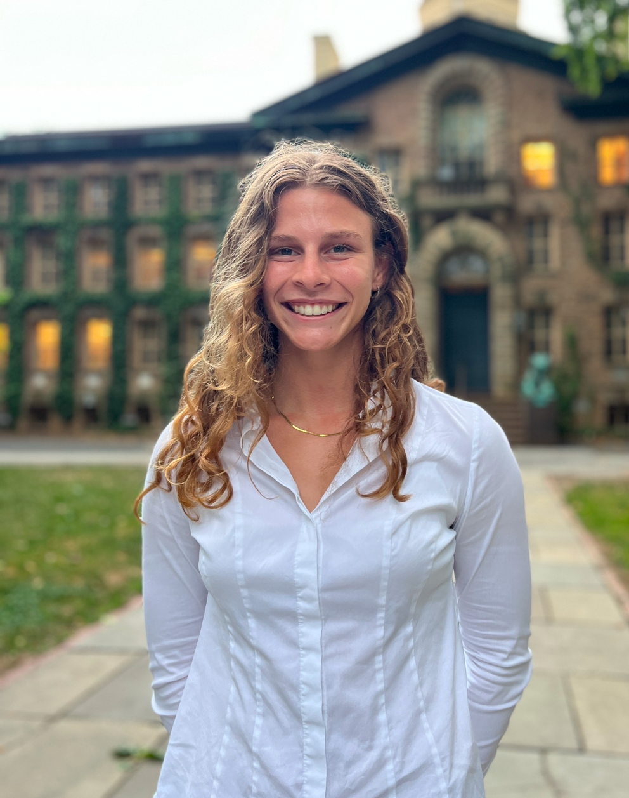
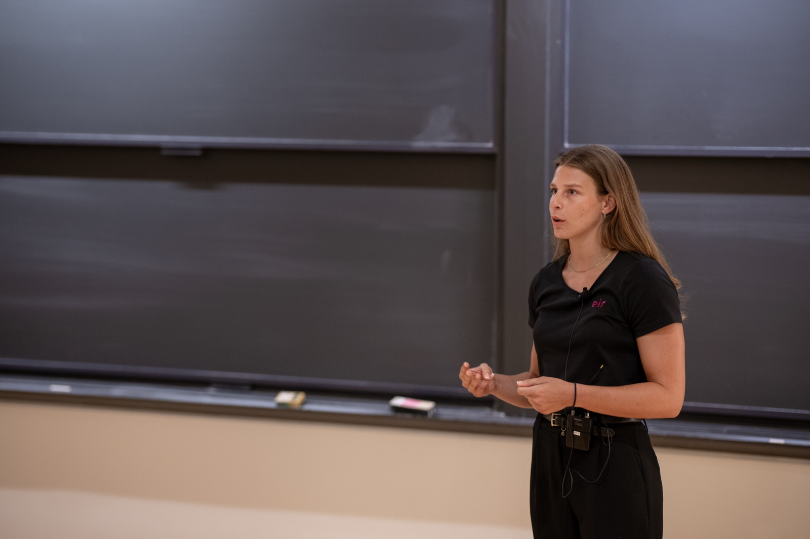
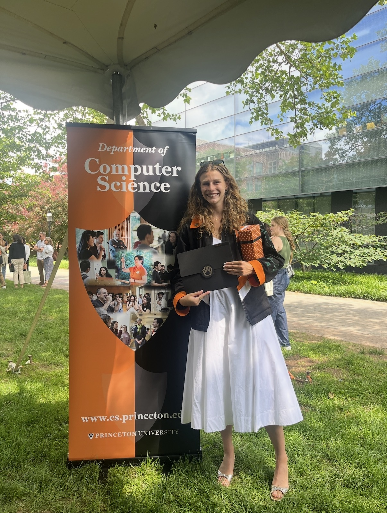

Shelby Fulton
Hi, I'm Shelby
MEng at Princeton University · Machine Learning · UI/UX · Wearable Technology
About Me
I'm a MEng student at Princeton University pursuing my master's degree in Electrical and Computer Engineering. I expect to graduate in May of 2026. I graduated in May of 2025 with my bachelor's degree in Computer Science, graduating with honors, and being awarded the Above and Beyond Service Award. This award was department-wide, in Princeton's largest undergraduate department.
I am passionate about applications of machine learning, UI/UX design, and bringing people of diverse backgrounds and interests together to achieve one common goal. I'm particularly interested in the health, wellness, and performance space, in tandem with wearables.
I balanced my STEM workload alongside my four-year Division 1 Varsity Volleyball career and was named an Ivy League champion in 2022 and 2024. Outside of school and volleyball, I also led Princeton's COS (Computer Science) Council as co-president where I spearheaded academic roundtables, social events, interdisciplinary workshops, and more.
Lastly, I am the founder of Astrid Athletics, where I've been developing an app in pursuit of helping female athletes optimize their athletic performance, based on their menstrual cycle, while also preserving data privacy.



Explore my projects above to see what I've been working on.